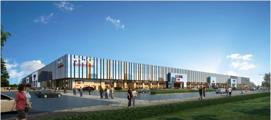

合肥华南城一期20万方五金机电交易中心位于华二路与国二路交口，东临好百年全球家居广场、北望家居建材交易中心、西接二期汽摩配交易中心，南靠名车广场，并与二期五金机电交易中心隔路相望，联手打造一个以全国大商贸体系为外援，以百万仓储空间及乾龙物流全国大物流网络为承载，擎制长三角五金机电市场龙头的中部最大的五金机电产业集聚区！

作为五金机电商户经营最高的要求无疑是畅通的物流，华南城•五金机电精品交易中心在优享政策优势的同时，更享有华南城旗下乾龙物流的高效率、低成本的仓储物流服务，最大化节约商户经营成本，成就华东地区最大、最专业的五金机电交易中心。
2014年11月18日，合肥市华南城五金商会正式揭牌成立，将对促进本地商贸市场成功升级转型，对合肥华南城商贸市场有序管理、各五金商家的活跃经营等发挥纽带和润滑作用，引领安徽五金机电批发、零售市场迈入新征程！